metric suite taken from the hand-object generation literature
Ten-arm ablation: x1 wins, rigidity backfires
x1 halves penetration and improves shape 33–36 %
removing RoPE gives the best direction and the worst shape
ablation — every arm on both metric axes
x1 parameterisation is the best architectural change and is now combined with history as C3 · the rigidity term made shape worse, not better
Discussion & Action items
Two knobs left: contact placement and object rigidity
Decided:
Deployment averages eight samples — free, and worth 29 %
Discussion:
Contact IoU is 38.8 % — the right amount of contact in the wrong places, and the rigidity loss made shape worse rather than better → the remaining lever is representational, not a penalty (owner)
Objects still deform 23× beyond physics — x1 parameterisation halves penetration and improves shape 33 %, so C3 = history + x1 is running (owner)
Two of my hypotheses were null — per-frame history gain and the rigidity term both did nothing or harm; the sampler finding replaced both (owner)
Action items:
Harvest C3 = history + x1 (C3 · me · today)
Re-render clips with the k = 8 recipe (viz · me · today)
Decide whether contact placement gets its own arm (next · owner · today)
Appendix: rollouts — C1 · plus three frames of history
One second · ground truth left, generated right, in every panel
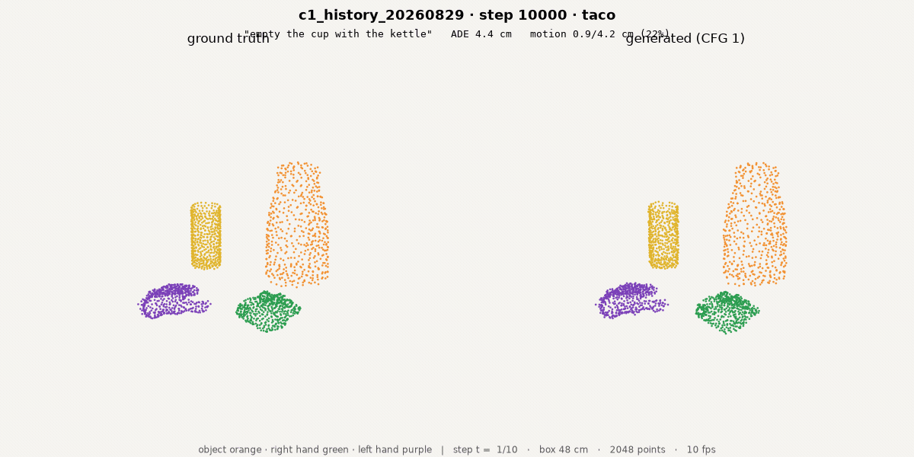
taco · ADE 4.4 cm · motion 22 %arctic · ADE 8.5 cm · motion 21 %dexycb · ADE 6.9 cm · motion 170 %hot3d · ADE 9.9 cm · motion 43 %oakink2 · ADE 3.1 cm · motion 21 %
the winning arm — ADE 13.82, first to beat a zero predictor · object orange · right hand green · left hand purple · per-clip ADE is one chunk, not the aggregate
Appendix: rollouts — D1 · frame 0 only
One second · ground truth left, generated right, in every panel
taco · ADE 4.4 cm · motion 18 %arctic · ADE 8.8 cm · motion 33 %dexycb · ADE 6.9 cm · motion 80 %
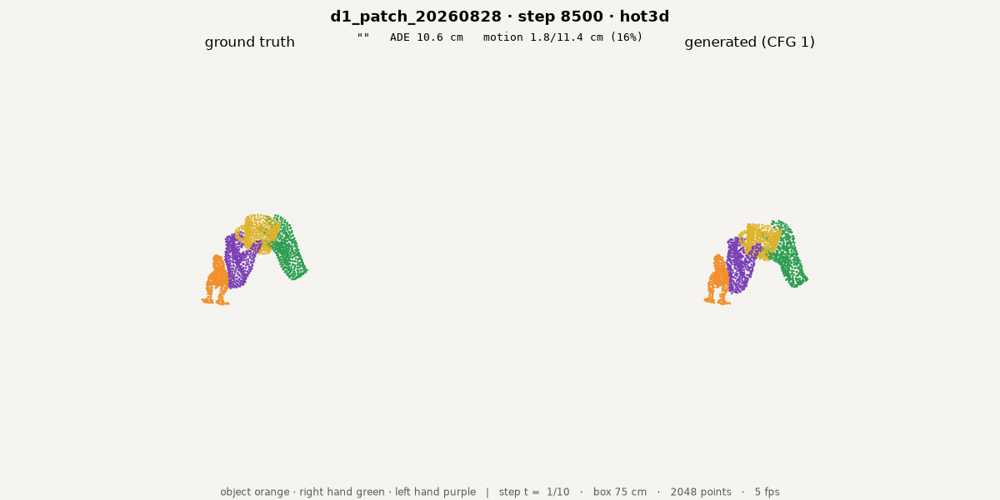
hot3d · ADE 10.6 cm · motion 16 %
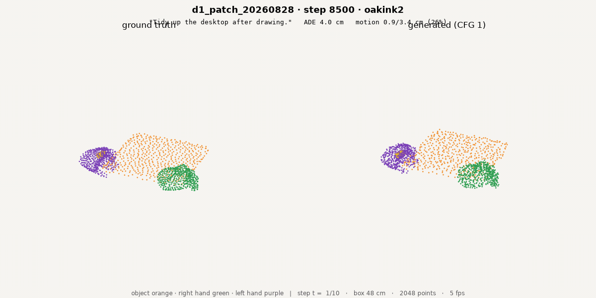
oakink2 · ADE 4.0 cm · motion 26 %
the baseline every other arm is measured against · object orange · right hand green · left hand purple · per-clip ADE is one chunk, not the aggregate
One second · ground truth left, generated right, in every panel
taco · ADE 4.8 cm · motion 29 %
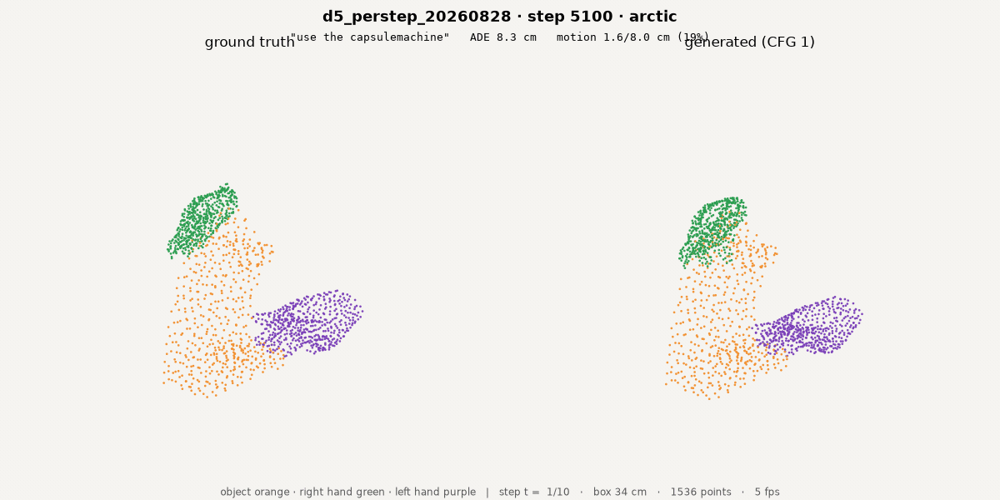
arctic · ADE 8.3 cm · motion 20 %dexycb · ADE 5.7 cm · motion 21 %hot3d · ADE 11.4 cm · motion 12 %oakink2 · ADE 4.2 cm · motion 31 %
collapsed to 16 % motion · object orange · right hand green · left hand purple · per-clip ADE is one chunk, not the aggregate
Appendix: rollouts — D2 · PTv3 windowed attention
One second · ground truth left, generated right, in every panel
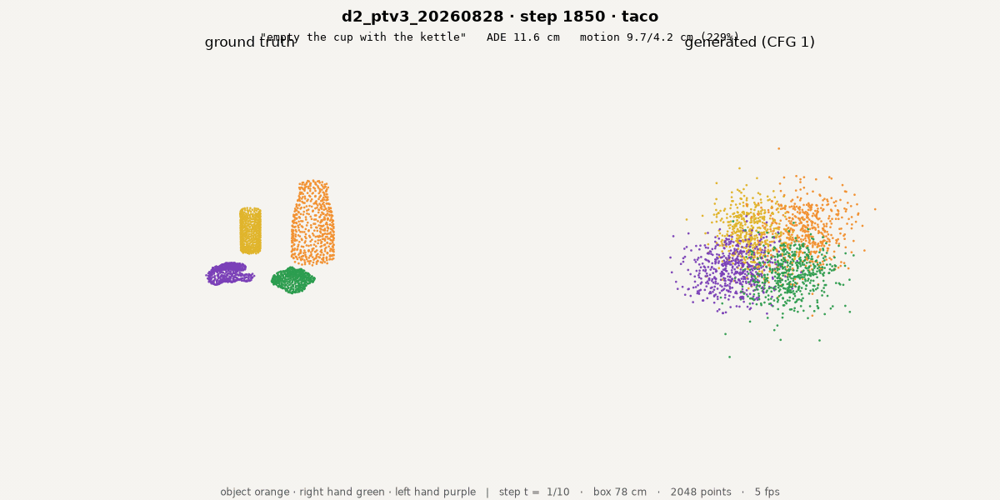
taco · ADE 11.6 cm · motion 229 %
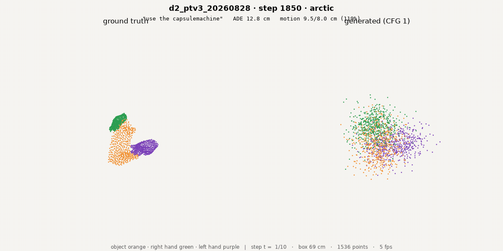
arctic · ADE 12.8 cm · motion 119 %
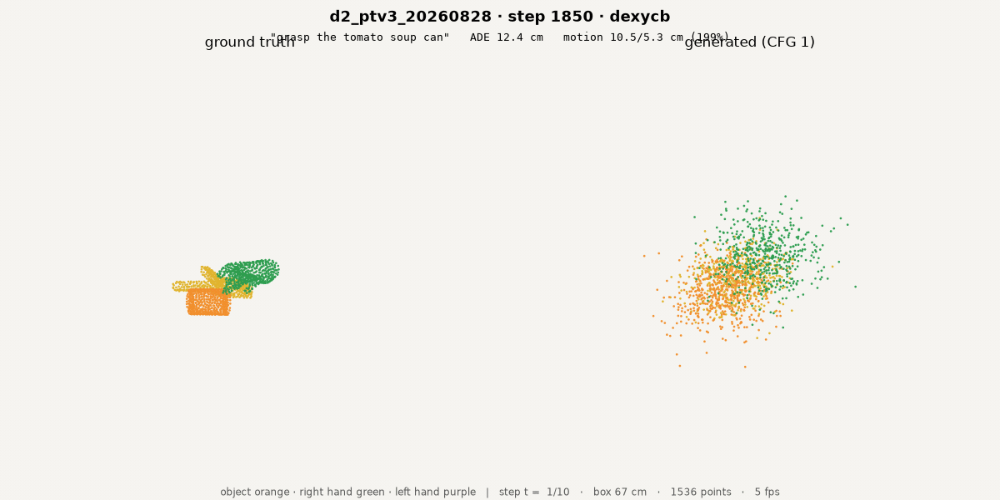
dexycb · ADE 12.4 cm · motion 199 %
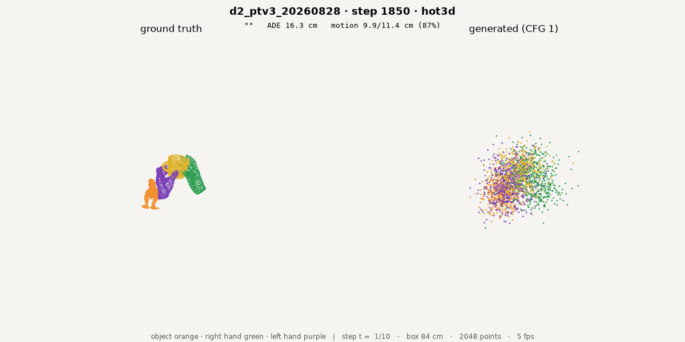
hot3d · ADE 16.3 cm · motion 87 %
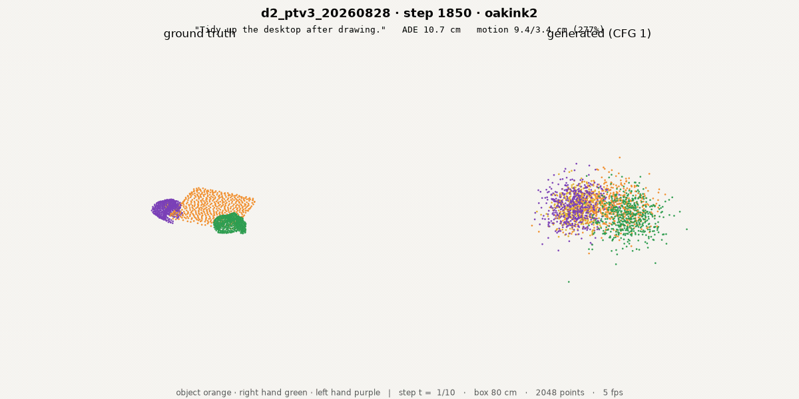
oakink2 · ADE 10.7 cm · motion 278 %
2,188 steps only — 9× fewer samples than the others · object orange · right hand green · left hand purple · per-clip ADE is one chunk, not the aggregate
Appendix: five-second chained rollouts
Five one-second chunks, each re-predicted from the previous endpoint
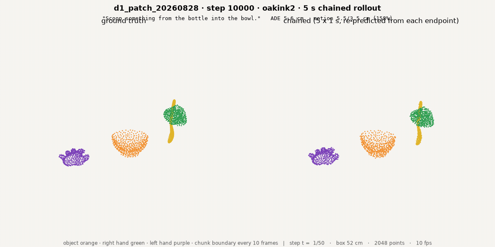
d1 · patch · oakink2
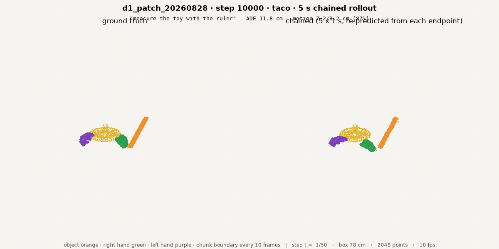
d1 · patch · taco
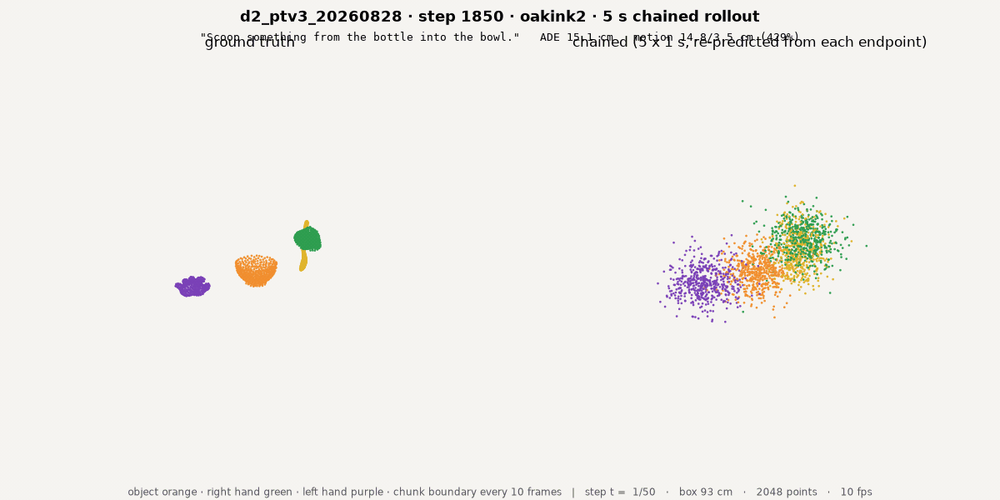
d2 · ptv3 · oakink2
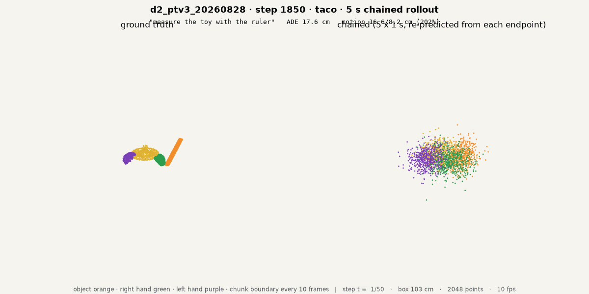
d2 · ptv3 · taco
closed-loop chunking — the mode General Flow and MolmoMotion deploy in · our open-loop horizon is one second
Appendix: five-second chained rollouts
Five one-second chunks, each re-predicted from the previous endpoint
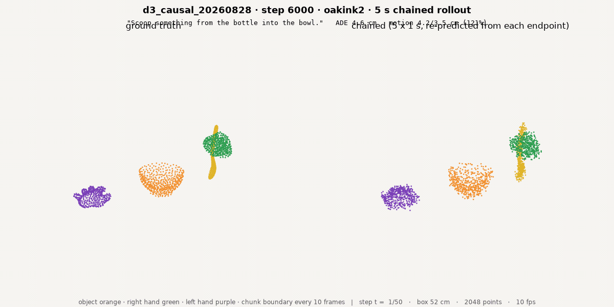
d3 · causal · oakink2d3 · causal · taco
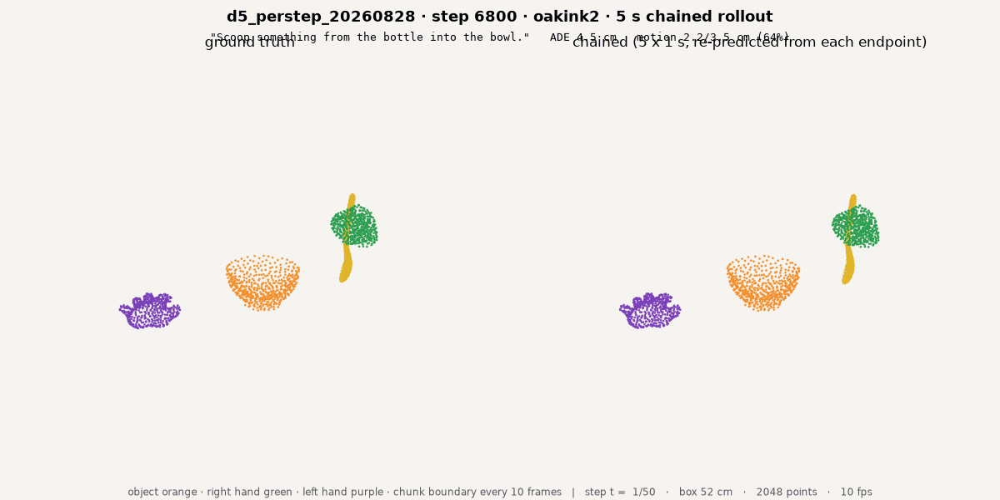
d5 · perstep · oakink2
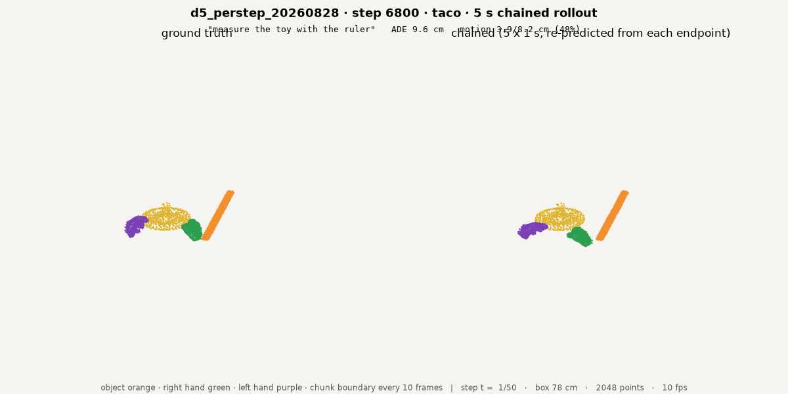
d5 · perstep · taco
closed-loop chunking — the mode General Flow and MolmoMotion deploy in · our open-loop horizon is one second
Appendix: rollouts — E5 · multi-stream, no weighting
Earlier arms, same rendering convention · one second per clip
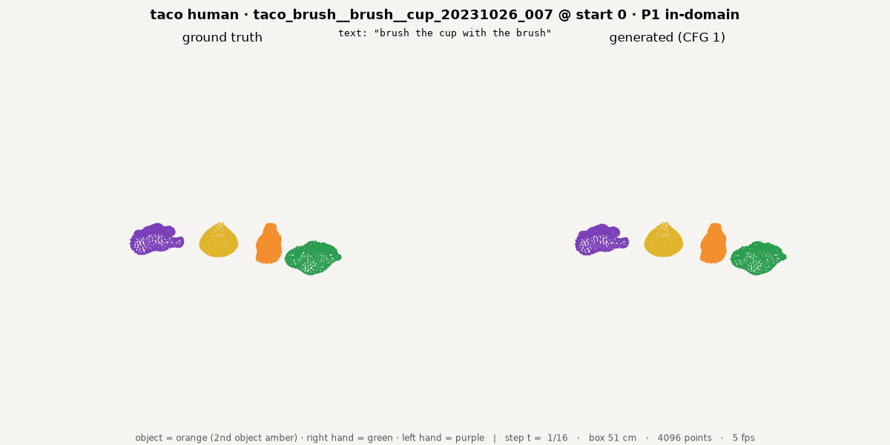
taco · humantaco · sharpaarctic · human
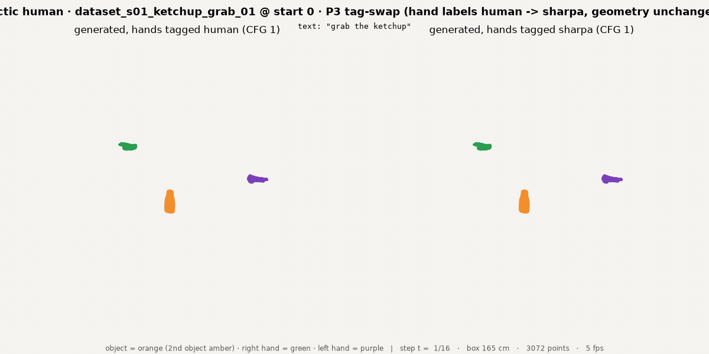
arctic · tagswap · p3
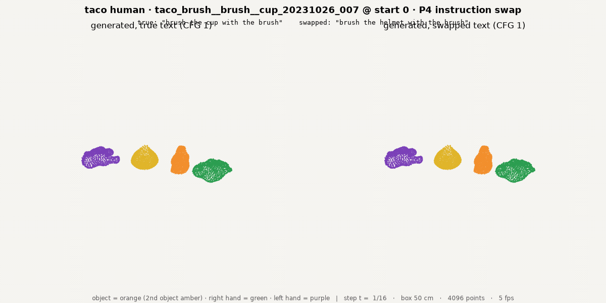
taco · textswap · p4
source: results/e5ms/clips · these predate tonight and use the 15 Hz / T = 16 configuration
source: results/pilot_fast_N1024_20260826/clips_p5 · these predate tonight and use the 15 Hz / T = 16 configuration
Appendix: figures — data and tokenisation
How the data is built and how points become tokens
inventory — training chunks per dataset after the motion filtertokenisation — real Hilbert partition, curve to patch to (frame × patch) grid
see also deck #6 for the full architecture derivation
Appendix: figures — arms and diagnosis
What each arm changed, and the error decomposition that redirected us
the arms — tokenisation, attention reach, what each borrowsattention masks per armdecomposition — oracle substitutions and per-step behaviour
diagnosis.svg is what showed direction, not magnitude, is the binding constraint
Appendix: MolmoMotion (D4)
Blocked on imagery that does not exist in our data — owner verification pending
object query points · synthetic render · green truth, red predictionhand query points · the case that beat a zero baseline 5 of 9DexYCB alignment · three camera conventions over one real photograph
these three need the owner's eyes: whether the render is recognisable, and which alignment panel is correct
Appendix: what is not here
Every rollout we have ever rendered is in this deck; some things have none
Eight of the night's investigations produced tables, not rollouts, because they are measurements rather than models: the frame-0 geometry pair test, the contact-conditioned pair test, cosine per MANO part, the propagation bound, contact versus curvature, the velocity direction ceiling, the scaled-velocity baseline, and the mechanical pipeline. D6 (duration, 110k steps) and C2 (history + duration) were still running when this deck was built, so neither has clips yet — D6 has four checkpoints that could be rendered on request. D8 (quarter data) was cancelled at step 2,200 and D9 (contact input) before its smoke, so neither produced a checkpoint worth rendering. MP4 versions of all 86 clips exist alongside the GIFs under results/. The MolmoMotion renders are stills and alignment GIFs rather than rollouts, because that arm never trained.